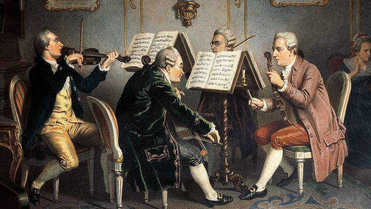
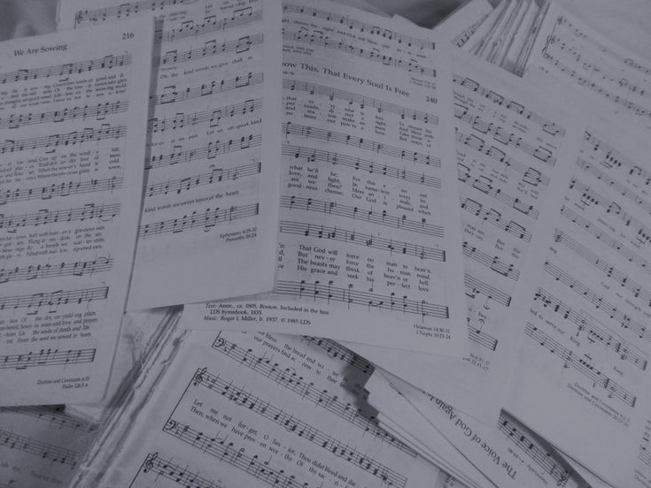
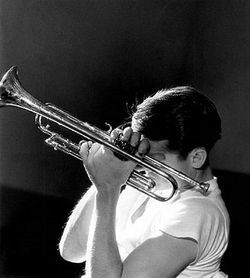
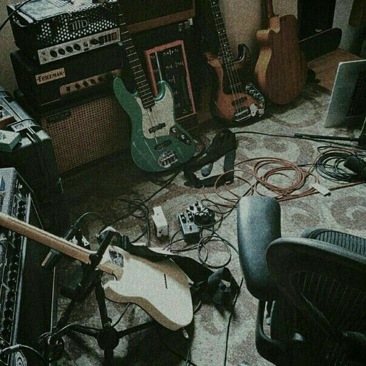
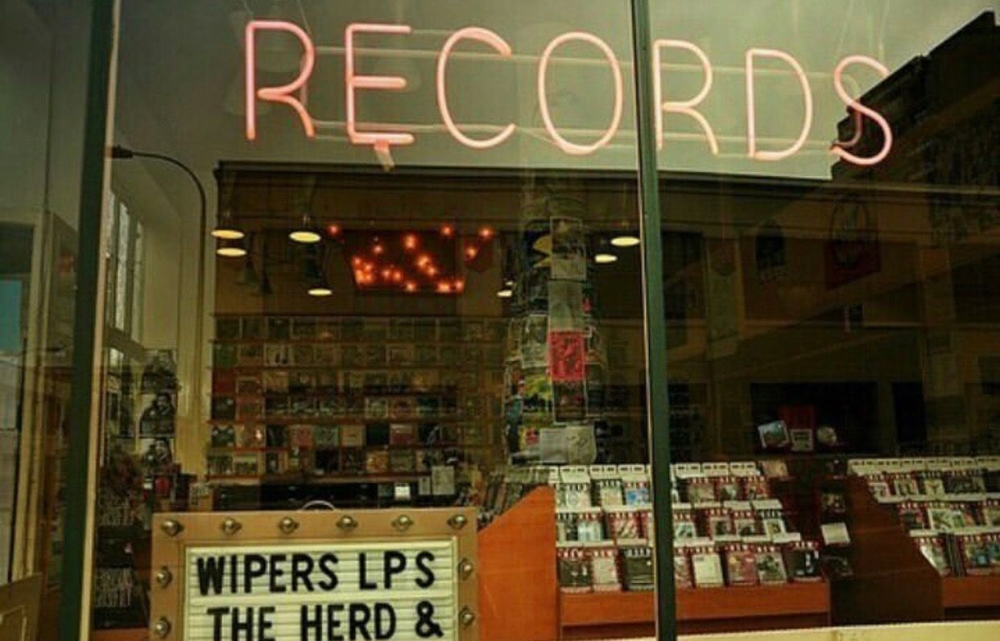
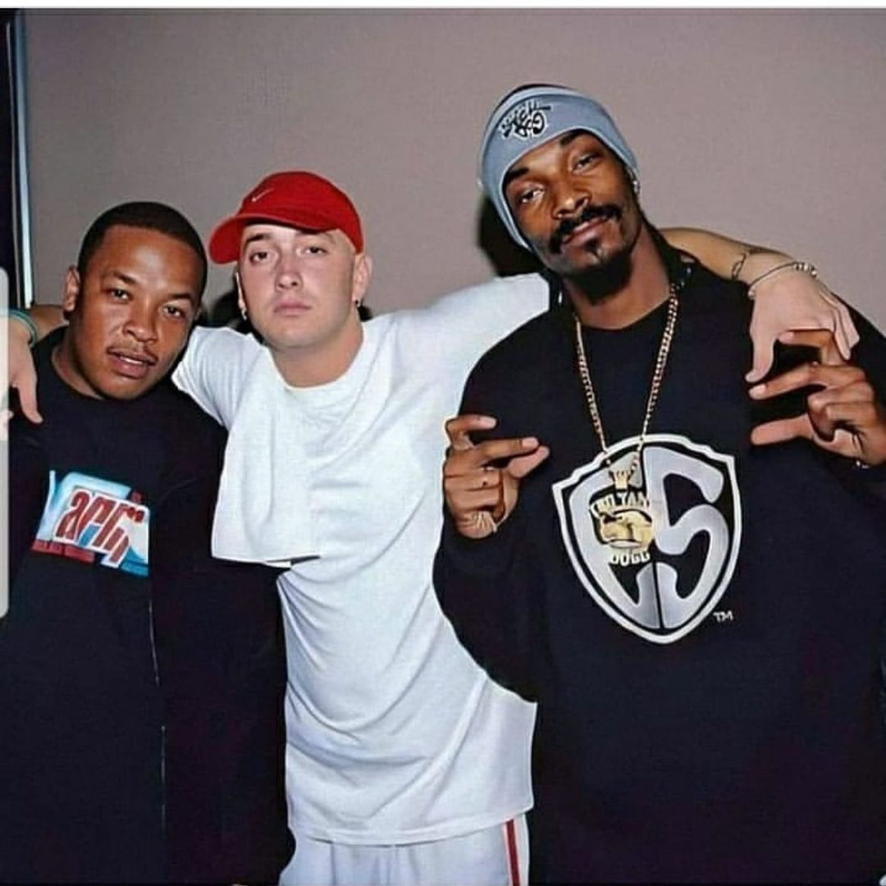
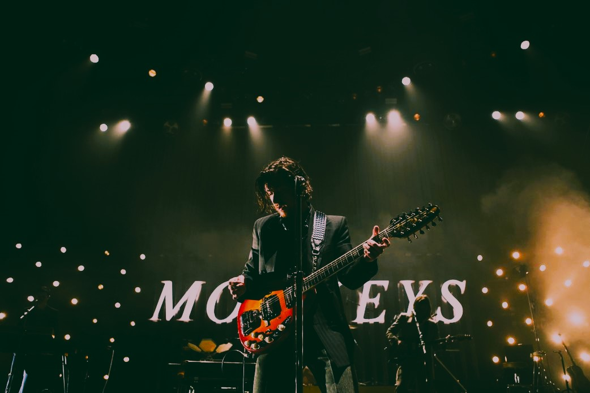
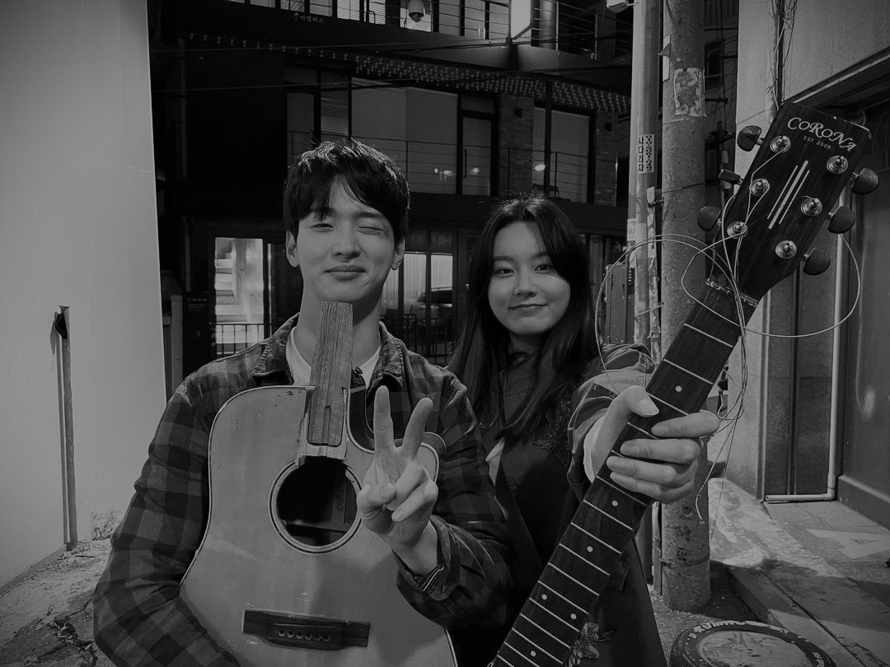

The Origins of Music (Ancient Times)
Music has been an integral part of human culture since ancient times. It originated with simple rhythms and melodies created using natural objects.
The Baroque Era (1600 - 1750)
The Baroque period marked a significant development in music with the emergence of composers like Johann Sebastian Bach and Antonio Vivaldi.
The Classical Era (1750 - 1820)
The Classical era brought us the music of Wolfgang Amadeus Mozart and Ludwig van Beethoven, known for their symphonies and sonatas.
The Romantic Era (1820 - 1910)
The Romantic period introduced emotional and expressive music, with composers like Franz Schubert and Pyotr Ilyich Tchaikovsky.
The Jazz Age (1920s)
The Jazz Age in the 1920s brought jazz music to the forefront, with legends like Louis Armstrong and Duke Ellington shaping the genre.
The Rock 'n' Roll Revolution (1950s)
The 1950s witnessed the rise of rock 'n' roll, with Elvis Presley and Chuck Berry paving the way for a cultural phenomenon.
The Electronic Music Era (Late 20th Century)
The late 20th century saw the emergence of electronic music genres, including techno, house, and trance, revolutionizing the music industry.
Contemporary Music (21st Century)
Today, music continues to evolve with diverse genres, digital technology, and global influences, shaping the sound of the 21st century.
Hip-Hop and Rap Emergence (Late 20th Century)
The late 20th century witnessed the rise of hip-hop and rap, with artists like Run-D.M.C., Tupac Shakur, and The Notorious B.I.G. shaping the genre.
Digital Music Revolution (21st Century)
The 21st century brought a digital music revolution with the advent of online streaming platforms, transforming how music is distributed and consumed.
Indie Music Movement (21st Century)
Independent and alternative music gained prominence, allowing musicians to reach global audiences without major record labels.
Pop Sensations (21st Century)
Pop music continued to dominate the charts with artists like Beyoncé, Taylor Swift, and Justin Bieber achieving global stardom.

Diverse Music Landscape (21st Century)
Today, the music landscape is incredibly diverse, with genres ranging from K-pop to EDM, reflecting the global nature of the industry.
